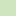

<!doctype html>
<html lang="en">
    <head>
        <meta charset="utf-8">
        <meta http-equiv="X-UA-Compatible" content="IE=edge">
        <meta name="viewport" content="initial-scale=1,user-scalable=no,maximum-scale=1,width=device-width">
        <meta name="mobile-web-app-capable" content="yes">
        <meta name="apple-mobile-web-app-capable" content="yes">
        <link rel="stylesheet" href="css/leaflet.css">
        <link rel="stylesheet" href="css/L.Control.Layers.Tree.css">
        <link rel="stylesheet" href="css/qgis2web.css">
        <link rel="stylesheet" href="css/fontawesome-all.min.css">
        <link rel="stylesheet" href="css/leaflet.photon.css">
        <link rel="stylesheet" href="css/leaflet-measure.css">
        <style>
        html, body {
            margin: 0;
            padding: 0;
        }
        #map {
            width: 100%;
            height: 100vh;
        }
        .leaflet-control-layers {
            font-size: 15px;
            padding: 8px 12px;
            line-height: 1.6;
        }
        .leaflet-control-layers img {
            width: 22px;
            height: auto;
            vertical-align: middle;
        }
        </style>
        <title>Project Seagrass </title>
    </head>
    <body>
        <div id="map">
        </div>
        <script src="js/qgis2web_expressions.js"></script>
        <script src="js/leaflet.js"></script>
        <script src="js/L.Control.Layers.Tree.min.js"></script>
        <script src="js/multi-style-layer.js"></script>
        <script src="js/leaflet.rotatedMarker.js"></script>
        <script src="js/leaflet.pattern.js"></script>
        <script src="js/leaflet-hash.js"></script>
        <script src="js/Autolinker.min.js"></script>
        <script src="js/rbush.min.js"></script>
        <script src="js/labelgun.min.js"></script>
        <script src="js/labels.js"></script>
        <script src="js/leaflet.photon.js"></script>
        <script src="js/leaflet-measure.js"></script>
        <script src="data/Scotland_outline_0.js"></script>
        <script src="data/PMFOption2_1.js"></script>
        <script src="data/PMFOption1_2.js"></script>
        <script src="data/Seagrasslocations_3.js"></script>
        <script>
        var map = L.map('map', {
            zoomControl:false, maxZoom:28, minZoom:1
        })
        var hash = new L.Hash(map);
        map.attributionControl.setPrefix('<a href="https://github.com/qgis2web/qgis2web" target="_blank">qgis2web</a> &middot; <a href="https://leafletjs.com" title="A JS library for interactive maps">Leaflet</a> &middot; <a href="https://qgis.org">QGIS</a>');
        var autolinker = new Autolinker({truncate: {length: 30, location: 'smart'}});
        // remove popup's row if "visible-with-data"
        function removeEmptyRowsFromPopupContent(content, feature) {
         var tempDiv = document.createElement('div');
         tempDiv.innerHTML = content;
         var rows = tempDiv.querySelectorAll('tr');
         for (var i = 0; i < rows.length; i++) {
             var td = rows[i].querySelector('td.visible-with-data');
             var key = td ? td.id : '';
             if (td && td.classList.contains('visible-with-data') && feature.properties[key] == null) {
                 rows[i].parentNode.removeChild(rows[i]);
             }
         }
         return tempDiv.innerHTML;
        }
        // modify popup if contains media
        function addClassToPopupIfMedia(content, popup) {
            var tempDiv = document.createElement('div');
            tempDiv.innerHTML = content;
            var imgTd = tempDiv.querySelector('td img');
            if (imgTd) {
                var src = imgTd.getAttribute('src');
                if (/\.(jpg|jpeg|png|gif|bmp|webp|avif)$/i.test(src)) {
                    popup._contentNode.classList.add('media');
                    var img = popup._contentNode.querySelector('td img');
                    if (img) {
                        // If already loaded (cache), update immediately
                        if (img.complete && img.naturalHeight > 0) {
                            popup.update();
                        } else {
                            img.addEventListener('load', function() {
                                popup.update();
                            });
                            img.addEventListener('error', function() {
                                popup.update();
                            });
                        }
                    }
                } else if (/\.(mp3|wav|ogg|aac)$/i.test(src)) {
                    var audio = document.createElement('audio');
                    audio.controls = true;
                    audio.src = src;
                    imgTd.parentNode.replaceChild(audio, imgTd);
                    popup._contentNode.classList.add('media');
                    setTimeout(function() {
                        popup.setContent(tempDiv.innerHTML);
                        popup.update();
                    }, 10);
                } else if (/\.(mp4|webm|ogg|mov)$/i.test(src)) {
                    var video = document.createElement('video');
                    video.controls = true;
                    video.src = src;
                    video.style.width = "400px";
                    video.style.height = "300px";
                    video.style.maxHeight = "60vh";
                    video.style.maxWidth = "60vw";
                    imgTd.parentNode.replaceChild(video, imgTd);
                    popup._contentNode.classList.add('media');
                    // Aggiorna il popup quando il video carica i metadati
                    video.addEventListener('loadedmetadata', function() {
                        popup.update();
                    });
                    setTimeout(function() {
                        popup.setContent(tempDiv.innerHTML);
                        popup.update();
                    }, 10);
                } else {
                    popup._contentNode.classList.remove('media');
                }
            } else {
                popup._contentNode.classList.remove('media');
            }
        }
        var title = new L.Control({'position':'topleft'});
        title.onAdd = function (map) {
            this._div = L.DomUtil.create('div', 'info');
            this.update();
            return this._div;
        };
        title.update = function () {
            this._div.innerHTML = '<h2>Project Seagrass </h2>';
        };
        title.addTo(map);
        var abstract = new L.Control({'position':'topleft'});
        abstract.onAdd = function (map) {
            this._div = L.DomUtil.create('div',
            'leaflet-control abstract');
            this._div.id = 'abstract'

                abstract.show();
                return this._div;
            };
            abstract.show = function () {
                this._div.classList.remove("abstract");
                this._div.classList.add("abstractUncollapsed");
                this._div.innerHTML = 'Map for PMF consultation. Authors: Matthew Floyd & Udara Nagodavithana';
        };
        abstract.addTo(map);
        var zoomControl = L.control.zoom({
            position: 'topleft'
        }).addTo(map);
        var measureControl = new L.Control.Measure({
            position: 'topleft',
            primaryLengthUnit: 'meters',
            secondaryLengthUnit: 'kilometers',
            primaryAreaUnit: 'sqmeters',
            secondaryAreaUnit: 'hectares'
        });
        measureControl.addTo(map);
        document.getElementsByClassName('leaflet-control-measure-toggle')[0].innerHTML = '';
        document.getElementsByClassName('leaflet-control-measure-toggle')[0].className += ' fas fa-ruler';
        var bounds_group = new L.featureGroup([]);
        function setBounds() {
            if (bounds_group.getLayers().length) {
                map.fitBounds(bounds_group.getBounds());
            }
            map.setMaxBounds(map.getBounds());
            map.setMinZoom(map.getZoom());
        }
        function pop_Scotland_outline_0(feature, layer) {
            var popupContent = '<table>\
                    <tr>\
                        <td colspan="2">' + (feature.properties['CTRY25CD'] !== null ? autolinker.link(String(feature.properties['CTRY25CD']).replace(/'/g, '\'').toLocaleString()) : '') + '</td>\
                    </tr>\
                    <tr>\
                        <td colspan="2">' + (feature.properties['CTRY25NM'] !== null ? autolinker.link(String(feature.properties['CTRY25NM']).replace(/'/g, '\'').toLocaleString()) : '') + '</td>\
                    </tr>\
                    <tr>\
                        <td colspan="2">' + (feature.properties['CTRY25NMW'] !== null ? autolinker.link(String(feature.properties['CTRY25NMW']).replace(/'/g, '\'').toLocaleString()) : '') + '</td>\
                    </tr>\
                    <tr>\
                        <td colspan="2">' + (feature.properties['BNG_E'] !== null ? autolinker.link(String(feature.properties['BNG_E']).replace(/'/g, '\'').toLocaleString()) : '') + '</td>\
                    </tr>\
                    <tr>\
                        <td colspan="2">' + (feature.properties['BNG_N'] !== null ? autolinker.link(String(feature.properties['BNG_N']).replace(/'/g, '\'').toLocaleString()) : '') + '</td>\
                    </tr>\
                    <tr>\
                        <td colspan="2">' + (feature.properties['LONG'] !== null ? autolinker.link(String(feature.properties['LONG']).replace(/'/g, '\'').toLocaleString()) : '') + '</td>\
                    </tr>\
                    <tr>\
                        <td colspan="2">' + (feature.properties['LAT'] !== null ? autolinker.link(String(feature.properties['LAT']).replace(/'/g, '\'').toLocaleString()) : '') + '</td>\
                    </tr>\
                </table>';
            var content = removeEmptyRowsFromPopupContent(popupContent, feature);
			layer.on('popupopen', function(e) {
				addClassToPopupIfMedia(content, e.popup);
			});
			layer.bindPopup(content, { maxHeight: 400 });
        }

        function style_Scotland_outline_0_0() {
            return {
                pane: 'pane_Scotland_outline_0',
                opacity: 1,
                color: 'rgba(35,35,35,0.0)',
                dashArray: '',
                lineCap: 'butt',
                lineJoin: 'miter',
                weight: 1.0, 
                fill: true,
                fillOpacity: 1,
                fillColor: 'rgba(207,229,191,1.0)',
                interactive: false,
            }
        }
        map.createPane('pane_Scotland_outline_0');
        map.getPane('pane_Scotland_outline_0').style.zIndex = 400;
        map.getPane('pane_Scotland_outline_0').style['mix-blend-mode'] = 'normal';
        var layer_Scotland_outline_0 = new L.geoJson(json_Scotland_outline_0, {
            attribution: '',
            interactive: false,
            dataVar: 'json_Scotland_outline_0',
            layerName: 'layer_Scotland_outline_0',
            pane: 'pane_Scotland_outline_0',
            onEachFeature: pop_Scotland_outline_0,
            style: style_Scotland_outline_0_0,
        });
        bounds_group.addLayer(layer_Scotland_outline_0);
        map.addLayer(layer_Scotland_outline_0);
        function pop_PMFOption2_1(feature, layer) {
            var popupContent = '<table>\
                    <tr>\
                        <td colspan="2">' + (feature.properties['name'] !== null ? autolinker.link(String(feature.properties['name']).replace(/'/g, '\'').toLocaleString()) : '') + '</td>\
                    </tr>\
                    <tr>\
                        <td colspan="2">' + (feature.properties['type'] !== null ? autolinker.link(String(feature.properties['type']).replace(/'/g, '\'').toLocaleString()) : '') + '</td>\
                    </tr>\
                    <tr>\
                        <td colspan="2">' + (feature.properties['species'] !== null ? autolinker.link(String(feature.properties['species']).replace(/'/g, '\'').toLocaleString()) : '') + '</td>\
                    </tr>\
                    <tr>\
                        <td colspan="2">' + (feature.properties['status'] !== null ? autolinker.link(String(feature.properties['status']).replace(/'/g, '\'').toLocaleString()) : '') + '</td>\
                    </tr>\
                    <tr>\
                        <td colspan="2">' + (feature.properties['date'] !== null ? autolinker.link(String(feature.properties['date']).replace(/'/g, '\'').toLocaleString()) : '') + '</td>\
                    </tr>\
                    <tr>\
                        <td colspan="2">' + (feature.properties['inform'] !== null ? autolinker.link(String(feature.properties['inform']).replace(/'/g, '\'').toLocaleString()) : '') + '</td>\
                    </tr>\
                    <tr>\
                        <td colspan="2">' + (feature.properties['shapearea'] !== null ? autolinker.link(String(feature.properties['shapearea']).replace(/'/g, '\'').toLocaleString()) : '') + '</td>\
                    </tr>\
                </table>';
            var content = removeEmptyRowsFromPopupContent(popupContent, feature);
			layer.on('popupopen', function(e) {
				addClassToPopupIfMedia(content, e.popup);
			});
			layer.bindPopup(content, { maxHeight: 400 });
        }

        var pattern_PMFOption2_1_0 = new L.StripePattern({
            weight: 0.3,
            spaceWeight: 2.0,
            color: '#1f78b4',
            opacity: 1.0,
            spaceOpacity: 0,
            angle: 315
        });
        pattern_PMFOption2_1_0.addTo(map);
        function style_PMFOption2_1_0() {
            return {
                pane: 'pane_PMFOption2_1',
                stroke: false,
                fillOpacity: 1,
                fillPattern: pattern_PMFOption2_1_0,
                interactive: true,
            }
        }
        var pattern_PMFOption2_1_1 = new L.StripePattern({
            weight: 0.3,
            spaceWeight: 2.0,
            color: '#1f78b4',
            opacity: 1.0,
            spaceOpacity: 0,
            angle: 225
        });
        pattern_PMFOption2_1_1.addTo(map);
        function style_PMFOption2_1_1() {
            return {
                pane: 'pane_PMFOption2_1',
                stroke: false,
                fillOpacity: 1,
                fillPattern: pattern_PMFOption2_1_1,
                interactive: true,
            }
        }
        function style_PMFOption2_1_2() {
            return {
                pane: 'pane_PMFOption2_1',
                opacity: 1,
                color: 'rgba(31,120,180,1.0)',
                dashArray: '',
                lineCap: 'square',
                lineJoin: 'bevel',
                weight: 2.0,
                fillOpacity: 0,
                interactive: true,
            }
        }
        map.createPane('pane_PMFOption2_1');
        map.getPane('pane_PMFOption2_1').style.zIndex = 401;
        map.getPane('pane_PMFOption2_1').style['mix-blend-mode'] = 'normal';
        var layer_PMFOption2_1 = new L.geoJson.multiStyle(json_PMFOption2_1, {
            attribution: '',
            interactive: true,
            dataVar: 'json_PMFOption2_1',
            layerName: 'layer_PMFOption2_1',
            pane: 'pane_PMFOption2_1',
            onEachFeature: pop_PMFOption2_1,
            styles: [style_PMFOption2_1_0,style_PMFOption2_1_1,style_PMFOption2_1_2,]
        });
        bounds_group.addLayer(layer_PMFOption2_1);
        map.addLayer(layer_PMFOption2_1);
        function pop_PMFOption1_2(feature, layer) {
            var popupContent = '<table>\
                    <tr>\
                        <td colspan="2">' + (feature.properties['name'] !== null ? autolinker.link(String(feature.properties['name']).replace(/'/g, '\'').toLocaleString()) : '') + '</td>\
                    </tr>\
                    <tr>\
                        <td colspan="2">' + (feature.properties['type'] !== null ? autolinker.link(String(feature.properties['type']).replace(/'/g, '\'').toLocaleString()) : '') + '</td>\
                    </tr>\
                    <tr>\
                        <th scope="row">species</th>\
                        <td>' + (feature.properties['species'] !== null ? autolinker.link(String(feature.properties['species']).replace(/'/g, '\'').toLocaleString()) : '') + '</td>\
                    </tr>\
                    <tr>\
                        <td colspan="2">' + (feature.properties['status'] !== null ? autolinker.link(String(feature.properties['status']).replace(/'/g, '\'').toLocaleString()) : '') + '</td>\
                    </tr>\
                    <tr>\
                        <td colspan="2">' + (feature.properties['date'] !== null ? autolinker.link(String(feature.properties['date']).replace(/'/g, '\'').toLocaleString()) : '') + '</td>\
                    </tr>\
                    <tr>\
                        <td colspan="2">' + (feature.properties['shape_area'] !== null ? autolinker.link(String(feature.properties['shape_area']).replace(/'/g, '\'').toLocaleString()) : '') + '</td>\
                    </tr>\
                    <tr>\
                        <td colspan="2">' + (feature.properties['inform'] !== null ? autolinker.link(String(feature.properties['inform']).replace(/'/g, '\'').toLocaleString()) : '') + '</td>\
                    </tr>\
                </table>';
            var content = removeEmptyRowsFromPopupContent(popupContent, feature);
			layer.on('popupopen', function(e) {
				addClassToPopupIfMedia(content, e.popup);
			});
			layer.bindPopup(content, { maxHeight: 400 });
        }

        var pattern_PMFOption1_2_0 = new L.StripePattern({
            weight: 0.3,
            spaceWeight: 2.0,
            color: '#cb0202',
            opacity: 1.0,
            spaceOpacity: 0,
            angle: 315
        });
        pattern_PMFOption1_2_0.addTo(map);
        function style_PMFOption1_2_0() {
            return {
                pane: 'pane_PMFOption1_2',
                stroke: false,
                fillOpacity: 1,
                fillPattern: pattern_PMFOption1_2_0,
                interactive: true,
            }
        }
        var pattern_PMFOption1_2_1 = new L.StripePattern({
            weight: 0.3,
            spaceWeight: 2.0,
            color: '#cb0202',
            opacity: 1.0,
            spaceOpacity: 0,
            angle: 225
        });
        pattern_PMFOption1_2_1.addTo(map);
        function style_PMFOption1_2_1() {
            return {
                pane: 'pane_PMFOption1_2',
                stroke: false,
                fillOpacity: 1,
                fillPattern: pattern_PMFOption1_2_1,
                interactive: true,
            }
        }
        function style_PMFOption1_2_2() {
            return {
                pane: 'pane_PMFOption1_2',
                opacity: 1,
                color: 'rgba(203,2,2,1.0)',
                dashArray: '',
                lineCap: 'square',
                lineJoin: 'bevel',
                weight: 2.0,
                fillOpacity: 0,
                interactive: true,
            }
        }
        map.createPane('pane_PMFOption1_2');
        map.getPane('pane_PMFOption1_2').style.zIndex = 402;
        map.getPane('pane_PMFOption1_2').style['mix-blend-mode'] = 'normal';
        var layer_PMFOption1_2 = new L.geoJson.multiStyle(json_PMFOption1_2, {
            attribution: '',
            interactive: true,
            dataVar: 'json_PMFOption1_2',
            layerName: 'layer_PMFOption1_2',
            pane: 'pane_PMFOption1_2',
            onEachFeature: pop_PMFOption1_2,
            styles: [style_PMFOption1_2_0,style_PMFOption1_2_1,style_PMFOption1_2_2,]
        });
        bounds_group.addLayer(layer_PMFOption1_2);
        map.addLayer(layer_PMFOption1_2);
        function pop_Seagrasslocations_3(feature, layer) {
            var source = feature.properties['Source'];
            if (source !== null && source !== undefined) {
                layer.bindPopup('<b>' + source + '</b>', { maxHeight: 400 });
            }
        }

        function style_Seagrasslocations_3_0(feature) {
            switch(String(feature.properties['Source'])) {
                case 'GEMS':
                    return {
                pane: 'pane_Seagrasslocations_3',
                radius: 5.6,
                opacity: 1,
                color: '#0B3D20',
                dashArray: '',
                lineCap: 'butt',
                lineJoin: 'miter',
                weight: 5.0,
                fill: true,
                fillOpacity: 1,
                fillColor: 'rgba(11,61,32,0.35)',
                interactive: true,
            }
                    break;
                case 'Seagrass Spotter':
                    return {
                pane: 'pane_Seagrasslocations_3',
                radius: 5.6,
                opacity: 1,
                color: '#3CC13C',
                dashArray: '',
                lineCap: 'butt',
                lineJoin: 'miter',
                weight: 5.0,
                fill: true,
                fillOpacity: 1,
                fillColor: 'rgba(60,193,60,0.35)',
                interactive: true,
            }
                    break;
            }
        }
        map.createPane('pane_Seagrasslocations_3');
        map.getPane('pane_Seagrasslocations_3').style.zIndex = 403;
        map.getPane('pane_Seagrasslocations_3').style['mix-blend-mode'] = 'normal';
        var layer_Seagrasslocations_3 = new L.geoJson(json_Seagrasslocations_3, {
            attribution: '',
            interactive: true,
            dataVar: 'json_Seagrasslocations_3',
            layerName: 'layer_Seagrasslocations_3',
            pane: 'pane_Seagrasslocations_3',
            onEachFeature: pop_Seagrasslocations_3,
            pointToLayer: function (feature, latlng) {
                var context = {
                    feature: feature,
                    variables: {}
                };
                return L.circleMarker(latlng, style_Seagrasslocations_3_0(feature));
            },
        });
        bounds_group.addLayer(layer_Seagrasslocations_3);
        map.addLayer(layer_Seagrasslocations_3);
        var overlaysTree = [
            {label: 'Seagrass locations<br /><table><tr><td style="text-align: center;"><span style="display:inline-block;width:12px;height:12px;border:3px solid #0B3D20;background:rgba(11,61,32,0.35);border-radius:50%;"></span></td><td>GEMS</td></tr><tr><td style="text-align: center;"><span style="display:inline-block;width:12px;height:12px;border:3px solid #3CC13C;background:rgba(60,193,60,0.35);border-radius:50%;"></span></td><td>Seagrass Spotter</td></tr></table>', layer: layer_Seagrasslocations_3},
            {label: ' PMF Option1', layer: layer_PMFOption1_2},
            {label: ' PMF Option 2', layer: layer_PMFOption2_1},
            {label: ' Scotland outline', layer: layer_Scotland_outline_0},]
        var lay = L.control.layers.tree(null, overlaysTree,{
            //namedToggle: true,
            //selectorBack: false,
            //closedSymbol: '&#8862; &#x1f5c0;',
            //openedSymbol: '&#8863; &#x1f5c1;',
            //collapseAll: 'Collapse all',
            //expandAll: 'Expand all',
            collapsed: false,
        });
        lay.addTo(map);
        setBounds();
		// Plain grey basemap (land and sea) underneath everything
        L.tileLayer('https://server.arcgisonline.com/ArcGIS/rest/services/Canvas/World_Light_Gray_Base/MapServer/tile/{z}/{y}/{x}', {
            maxNativeZoom: 16,
            maxZoom: 20,
            attribution: 'Basemap &copy; Esri'
        }).addTo(map);
        // Place names on top of the map
        map.createPane('labels');
        map.getPane('labels').style.zIndex = 650;
        map.getPane('labels').style.pointerEvents = 'none';
        L.tileLayer('https://server.arcgisonline.com/ArcGIS/rest/services/Canvas/World_Light_Gray_Reference/MapServer/tile/{z}/{y}/{x}', {
            pane: 'labels',
            maxNativeZoom: 16,
            maxZoom: 20,
            attribution: 'Place names &copy; Esri, HERE, Garmin, &copy; OpenStreetMap contributors'
        }).addTo(map);
        // Scale bar that updates as you zoom
        L.control.scale({position: 'bottomleft', metric: true, imperial: false, maxWidth: 150}).addTo(map);

        // Points: small when zoomed out, bigger when zoomed in
        function setPointSize() {
            var z = map.getZoom();
            var size;
            if (z <= 7)       { size = {radius: 1.5, weight: 1}; }
            else if (z <= 9)  { size = {radius: 2.5, weight: 1.5}; }
            else if (z <= 11) { size = {radius: 4,   weight: 2}; }
            else              { size = {radius: 5,   weight: 3}; }
            layer_Seagrasslocations_3.setStyle(size);
        }
        map.on('zoomend', setPointSize);
        setPointSize();
        </script>
		<script src="data/BottomTrawlRestrictions.js"></script>
        <script src="data/SixNauticalMileLimit.js"></script>
        <script src="extra_layers.js"></script>
		<script src="data/fishing_2025.js"></script>
        <script src="fishing_layer.js"></script>
    </body>
</html>
